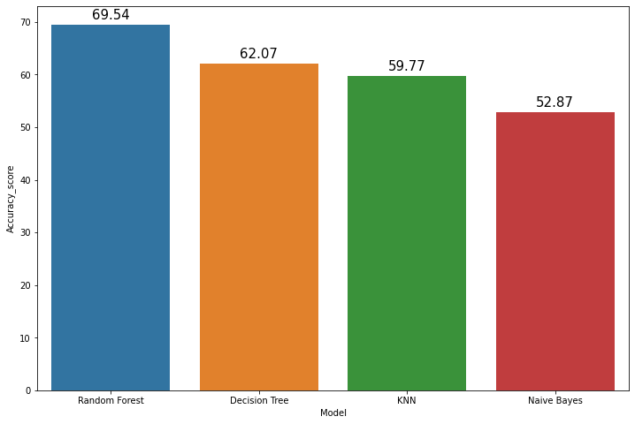

Contents
import numpy as np
import pandas as pd
import matplotlib.pyplot as plt
import seaborn as sns
#Metrics
from sklearn.metrics import make_scorer, accuracy_score,precision_score
from sklearn.metrics import classification_report
from sklearn.metrics import confusion_matrix
from sklearn.metrics import accuracy_score ,precision_score,recall_score,f1_score
#Model Select
from sklearn.model_selection import KFold,train_test_split,cross_val_score
from sklearn.ensemble import RandomForestClassifier
from sklearn.model_selection import train_test_split
from sklearn.linear_model import LogisticRegression
from sklearn.ensemble import RandomForestClassifier
from sklearn import linear_model
from sklearn.linear_model import SGDClassifier
from sklearn.tree import DecisionTreeClassifier
from sklearn.neighbors import KNeighborsClassifier
from sklearn.svm import SVC, LinearSVC
from sklearn.naive_bayes import GaussianNB
mhs = pd.read_csv("https://raw.githubusercontent.com/DiahDSyntia/datamining-tugasakhir/main/indian_liver_patient.csv")
mhs.head(10)
| Age | Gender | Total_Bilirubin | Direct_Bilirubin | Alkaline_Phosphotase | Alamine_Aminotransferase | Aspartate_Aminotransferase | Total_Protiens | Albumin | Albumin_and_Globulin_Ratio | Dataset | |
|---|---|---|---|---|---|---|---|---|---|---|---|
| 0 | 65 | 0 | 0.7 | 0.1 | 187 | 16 | 18 | 6.8 | 3.3 | 0.90 | 1 |
| 1 | 62 | 1 | 10.9 | 5.5 | 699 | 64 | 100 | 7.5 | 3.2 | 0.74 | 1 |
| 2 | 62 | 1 | 7.3 | 4.1 | 490 | 60 | 68 | 7.0 | 3.3 | 0.89 | 1 |
| 3 | 58 | 1 | 1.0 | 0.4 | 182 | 14 | 20 | 6.8 | 3.4 | 1.00 | 1 |
| 4 | 72 | 1 | 3.9 | 2.0 | 195 | 27 | 59 | 7.3 | 2.4 | 0.40 | 1 |
| 5 | 46 | 1 | 1.8 | 0.7 | 208 | 19 | 14 | 7.6 | 4.4 | 1.30 | 1 |
| 6 | 26 | 0 | 0.9 | 0.2 | 154 | 16 | 12 | 7.0 | 3.5 | 1.00 | 1 |
| 7 | 29 | 0 | 0.9 | 0.3 | 202 | 14 | 11 | 6.7 | 3.6 | 1.10 | 1 |
| 8 | 17 | 1 | 0.9 | 0.3 | 202 | 22 | 19 | 7.4 | 4.1 | 1.20 | 2 |
| 9 | 55 | 1 | 0.7 | 0.2 | 290 | 53 | 58 | 6.8 | 3.4 | 1.00 | 1 |
mhs['Dataset'].unique()
array([1, 2])
X=mhs.iloc[:,0:10].values
y=mhs.iloc[:,10].values
from sklearn.preprocessing import LabelEncoder
le = LabelEncoder()
y = le.fit_transform(y)
#Train and Test split
X_train,X_test,y_train,y_test=train_test_split(X,y,test_size=0.3,random_state=0)
# Random Forest
random_forest = RandomForestClassifier(n_estimators=100)
random_forest.fit(X_train, y_train)
Y_prediction = random_forest.predict(X_test)
accuracy_rf=round(accuracy_score(y_test,Y_prediction)* 100, 2)
acc_random_forest = round(random_forest.score(X_train, y_train) * 100, 2)
cm = confusion_matrix(y_test, Y_prediction)
accuracy = accuracy_score(y_test,Y_prediction)
precision =precision_score(y_test, Y_prediction,average='micro')
recall = recall_score(y_test, Y_prediction,average='micro')
f1 = f1_score(y_test,Y_prediction,average='micro')
print('Confusion matrix for Random Forest\n',cm)
print('accuracy_random_Forest : %.3f' %accuracy)
print('precision_random_Forest : %.3f' %precision)
print('recall_random_Forest : %.3f' %recall)
print('f1-score_random_Forest : %.3f' %f1)
Confusion matrix for Random Forest
[[110 12]
[ 39 13]]
accuracy_random_Forest : 0.707
precision_random_Forest : 0.707
recall_random_Forest : 0.707
f1-score_random_Forest : 0.707
knn = KNeighborsClassifier(n_neighbors = 3)
knn.fit(X_train, y_train)
Y_pred = knn.predict(X_test)
accuracy_knn=round(accuracy_score(y_test,Y_pred)* 100, 2)
acc_knn = round(knn.score(X_train, y_train) * 100, 2)
cm = confusion_matrix(y_test, Y_pred)
accuracy = accuracy_score(y_test,Y_pred)
precision =precision_score(y_test, Y_pred,average='micro')
recall = recall_score(y_test, Y_pred,average='micro')
f1 = f1_score(y_test,Y_pred,average='micro')
print('Confusion matrix for KNN\n',cm)
print('accuracy_KNN : %.3f' %accuracy)
print('precision_KNN : %.3f' %precision)
print('recall_KNN: %.3f' %recall)
print('f1-score_KNN : %.3f' %f1)
Confusion matrix for KNN
[[91 31]
[39 13]]
accuracy_KNN : 0.598
precision_KNN : 0.598
recall_KNN: 0.598
f1-score_KNN : 0.598
gaussian = GaussianNB()
gaussian.fit(X_train, y_train)
Y_pred = gaussian.predict(X_test)
accuracy_nb=round(accuracy_score(y_test,Y_pred)* 100, 2)
acc_gaussian = round(gaussian.score(X_train, y_train) * 100, 2)
cm = confusion_matrix(y_test, Y_pred)
accuracy = accuracy_score(y_test,Y_pred)
precision =precision_score(y_test, Y_pred,average='micro')
recall = recall_score(y_test, Y_pred,average='micro')
f1 = f1_score(y_test,Y_pred,average='micro')
print('Confusion matrix for Naive Bayes\n',cm)
print('accuracy_Naive Bayes: %.3f' %accuracy)
print('precision_Naive Bayes: %.3f' %precision)
print('recall_Naive Bayes: %.3f' %recall)
print('f1-score_Naive Bayes : %.3f' %f1)
Confusion matrix for Naive Bayes
[[42 80]
[ 2 50]]
accuracy_Naive Bayes: 0.529
precision_Naive Bayes: 0.529
recall_Naive Bayes: 0.529
f1-score_Naive Bayes : 0.529
decision_tree = DecisionTreeClassifier()
decision_tree.fit(X_train, y_train)
Y_pred = decision_tree.predict(X_test)
accuracy_dt=round(accuracy_score(y_test,Y_pred)* 100, 2)
acc_decision_tree = round(decision_tree.score(X_train, y_train) * 100, 2)
cm = confusion_matrix(y_test, Y_pred)
accuracy = accuracy_score(y_test,Y_pred)
precision =precision_score(y_test, Y_pred,average='micro')
recall = recall_score(y_test, Y_pred,average='micro')
f1 = f1_score(y_test,Y_pred,average='micro')
print('Confusion matrix for DecisionTree\n',cm)
print('accuracy_DecisionTree: %.3f' %accuracy)
print('precision_DecisionTree: %.3f' %precision)
print('recall_DecisionTree: %.3f' %recall)
print('f1-score_DecisionTree : %.3f' %f1)
Confusion matrix for DecisionTree
[[88 34]
[37 15]]
accuracy_DecisionTree: 0.592
precision_DecisionTree: 0.592
recall_DecisionTree: 0.592
f1-score_DecisionTree : 0.592
results = pd.DataFrame({
'Model': [ 'KNN',
'Random Forest',
'Naive Bayes',
'Decision Tree'],
'Score': [ acc_knn,
acc_random_forest,
acc_gaussian,
acc_decision_tree],
"Accuracy_score":[accuracy_knn,
accuracy_rf,
accuracy_nb,
accuracy_dt
]})
result_df = results.sort_values(by='Accuracy_score', ascending=False)
result_df = result_df.reset_index(drop=True)
result_df.head(9)
| Model | Score | Accuracy_score | |
|---|---|---|---|
| 0 | Random Forest | 100.00 | 70.69 |
| 1 | KNN | 82.47 | 59.77 |
| 2 | Decision Tree | 100.00 | 59.20 |
| 3 | Naive Bayes | 55.56 | 52.87 |
plt.subplots(figsize=(12,8))
ax=sns.barplot(x='Model',y="Accuracy_score",data=result_df)
labels = (result_df["Accuracy_score"])
# add result numbers on barchart
for i, v in enumerate(labels):
ax.text(i, v+1, str(v), horizontalalignment = 'center', size = 15, color = 'black')

X_new = np.array([[46, 1, 1.8, 0.7, 208, 19, 14, 7.6, 4.4, 1.30]])
prediksi = decision_tree.predict(X_new)
print (prediksi)
[0]
X_new = np.array([[46, 1, 1.8, 0.7, 208, 19, 14, 7.6, 4.4, 1.30]])
prediksi = knn.predict(X_new)
print (prediksi)
[0]
X_new = np.array([[46, 1, 1.8, 0.7, 208, 19, 14, 7.6, 4.4, 1.30]])
prediksi = random_forest.predict(X_new)
print (prediksi)
[0]
X_new = np.array([[46, 1, 1.8, 0.7, 208, 19, 14, 7.6, 4.4, 1.30]])
prediksi = gaussian.predict(X_new)
print (prediksi)
[1]